C1
Più Energy (Burst più affidabile già dalla prima rotazione) e la prima Elemental Skill in combattimento dà 60 Impact invece di 40.
Guida rapida · versione 7.2
Build, kit, Constellations e team di Valeriy, riassunti dallo showcase “Valeriy is kinda Busted? But at a cost... Genshin Impact 7.2” di IWinToLose Gaming. È un 4★ Electro che dà uno scudo, le Quills e buff ai danni Electro e Stellar-Conduct: è pensato per supportare Mitya.
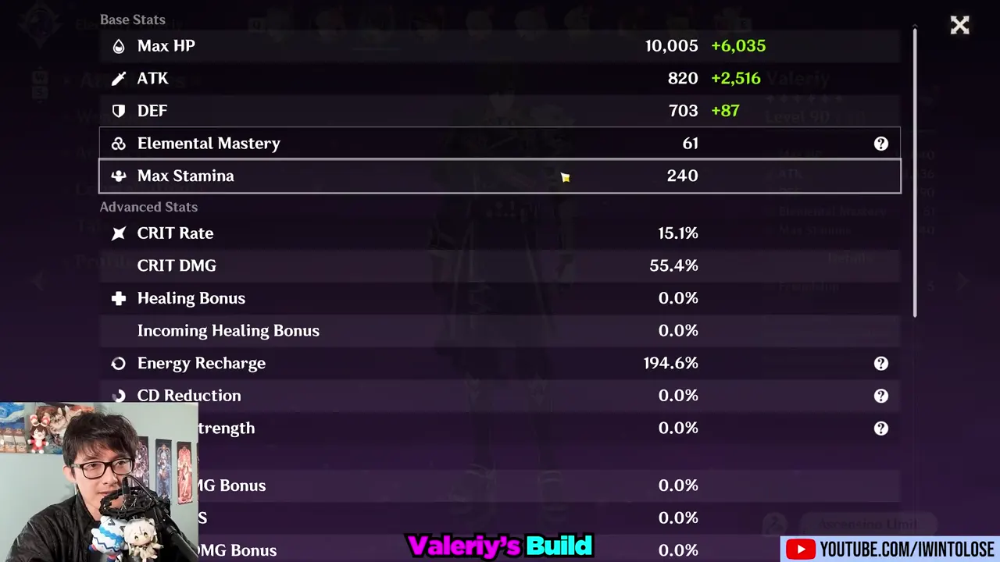
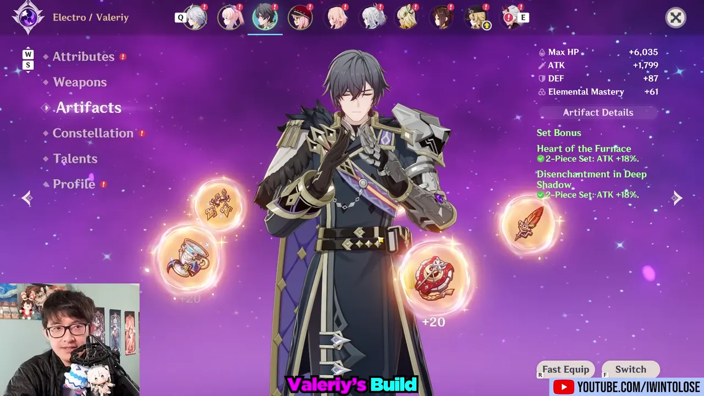
Normal Attack: solo 3 colpi da spada, danno Physical quasi inutile. Il Talent va comunque livellato, perché le Quills scalano sul suo livello.
Con almeno 40 Impact Momentum può usare Direct-Fire Mortar: Point-Blank Bombardment: consuma tutto l’Impact, infligge danno Electro ad area e dà 15 stack di Offensive Directive (le “Quills”) al team. Entro 0,8 s dall’Elemental Skill o dal Burst basta premere Normal Attack per lanciarlo subito.
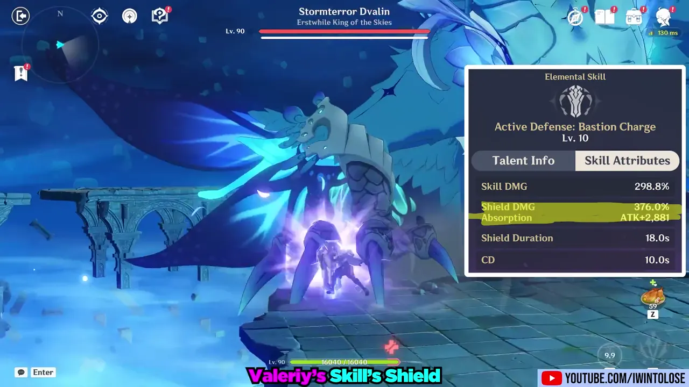
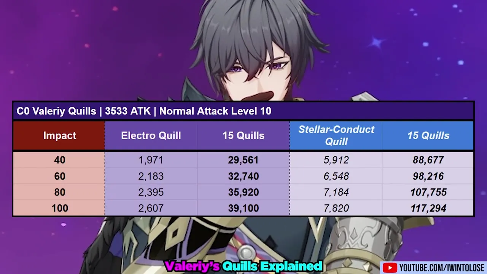
| Impact | Quill Electro | 15 Quills Electro | Quill Stellar-Conduct | 15 Quills Stellar-Conduct |
|---|---|---|---|---|
| 40 | 1.971 | 29.561 | 5.912 | 88.677 |
| 60 | 2.183 | 32.740 | 6.548 | 98.216 |
| 80 | 2.395 | 35.920 | 7.184 | 107.755 |
| 100 | 2.607 | 39.100 | 7.820 | 117.294 |
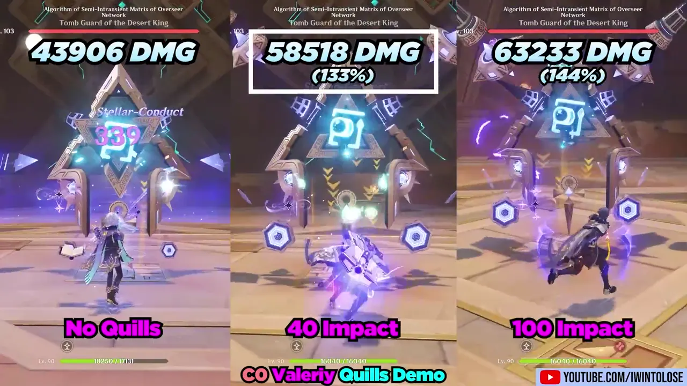
Le Quills rendono molto di più sullo Stellar-Conduct. Con Electro puro (test con Clorinde C1R1) il guadagno è enorme finché durano, ma lei le consuma in fretta: in tutta la rotazione aggiungono circa 90–125k danni. Restano utili, ma meno.
Extra: +25% di ricompense dalle spedizioni a Snezhnaya.
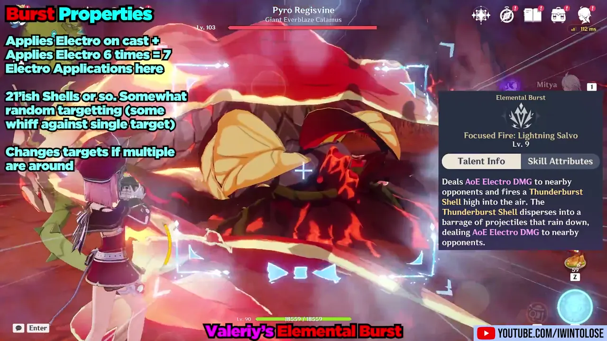
Una rotazione tipica è Elemental Burst + Elemental Skill + Charged Attack speciale. L’ordine è flessibile: si può spezzare su più ingressi in campo e a volte conviene usare l’Elemental Skill più volte.
Varianti mostrate nel videoE Q C · E C Q · Q C E · E C (split) Q · Q C (split) E · E C (split) E C
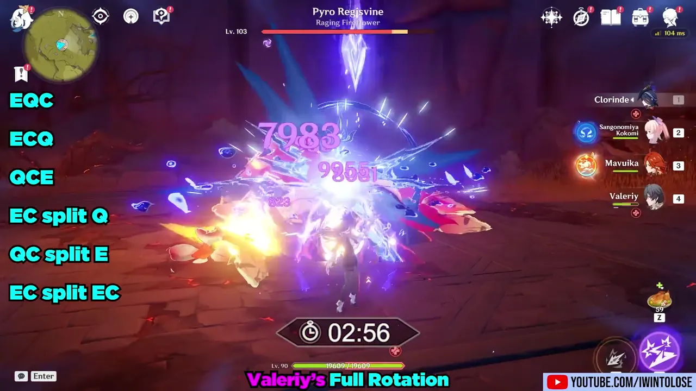
| Constellation | Danno Mitya | Totale | Guadagno |
|---|---|---|---|
| Solo Mitya | 43.906 | 100% | – |
| C0 Valeriy | 63.233 | 144,0% | +44,0% |
| C2 Valeriy+100 Elemental Mastery | 70.461 | 160,5% | +11,4% |
| C3 Valeriy+3 livelli Normal Attack | 72.532 | 165,2% | +2,9% |
| C4 Valeriy+30 Impact massimo | 74.889 | 170,6% | +3,2% |
| C6 Valeriy60 di CRIT value | 96.382 | 219,5% | +28,7% |
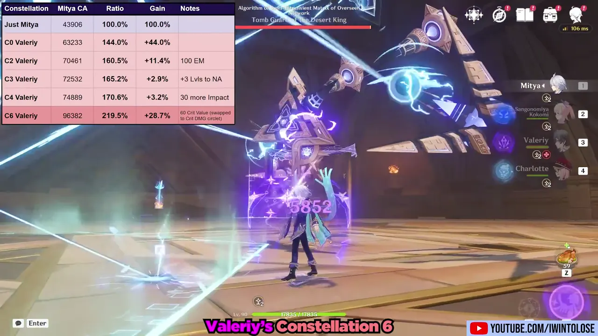
Più Energy (Burst più affidabile già dalla prima rotazione) e la prima Elemental Skill in combattimento dà 60 Impact invece di 40.
+100 Elemental Mastery a tutto il team per 18 s dopo l’Elemental Skill. L’Impact in eccesso rinforza lo scudo.
C3: +3 livelli al Normal Attack (Quills un po’ più forti). C4: Impact massimo 130. C5: +3 livelli all’Elemental Skill. Guadagni piccoli.
+10% CRIT Rate e +40% CRIT DMG ai danni Electro Stellar-Conduct. Funziona come un debuff sul nemico per circa 7 s (i nemici subiscono più CRIT DMG da Stellar-Conduct, come conferma anche l’infografica), quindi potenzia anche Yae Miko.
Con Valeriy C0 Mitya ha bisogno di Burst e qualche colpo in più per finire il Kongamato. Con Valeriy C6 lo uccide con la prima raffica e ha ancora due raffiche a disposizione. C’è anche una versione F2P con Diona e Sucrose.
Secondo il creator è uno dei personaggi che sfrutta meglio Valeriy: Cyno fa parecchi danni Stellar-Conduct, quindi usa bene le Quills (showcase con Cyno C1 e R5 Deathmatch).
Si può usare, ma ci sono opzioni migliori, ad esempio Nicole: senza Stellar-Conduct il +40% CRIT DMG della C6 non si applica e l’Elemental Mastery della C2 è quasi sprecata. Con Flins rimangono solo il +10% CRIT Rate e l’Elemental Mastery, perché i danni Lunar-Charged non ricevono le Quills.
Con C2 (+100 Elemental Mastery a tutto il team) e set Instructor’s + Sapwood Blade, Valeriy diventa una scelta valida come 4° slot per Nefer, che ha pochi buffer di Elemental Mastery. Il buff aiuta anche Lauma. Il creator la definisce una “sleeper choice”.
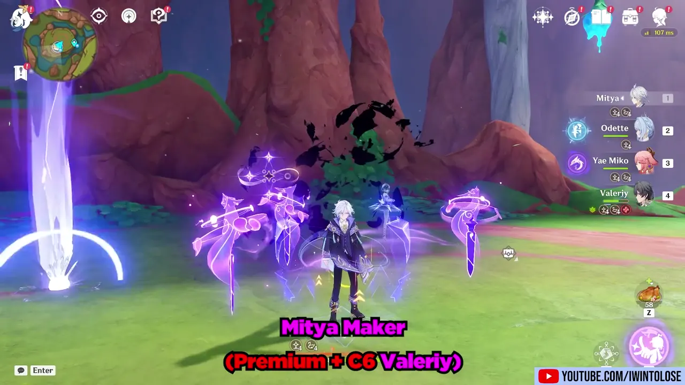
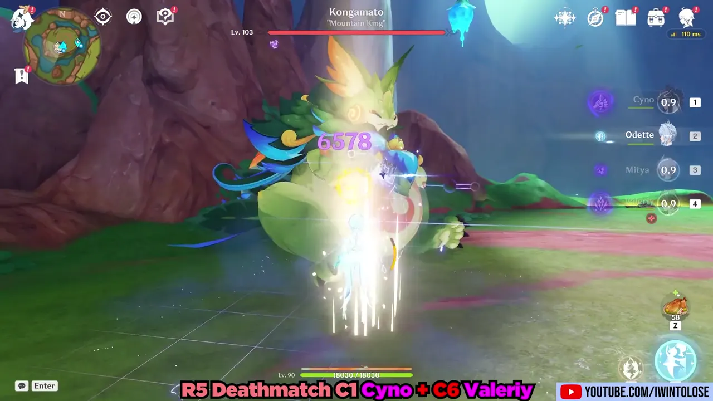
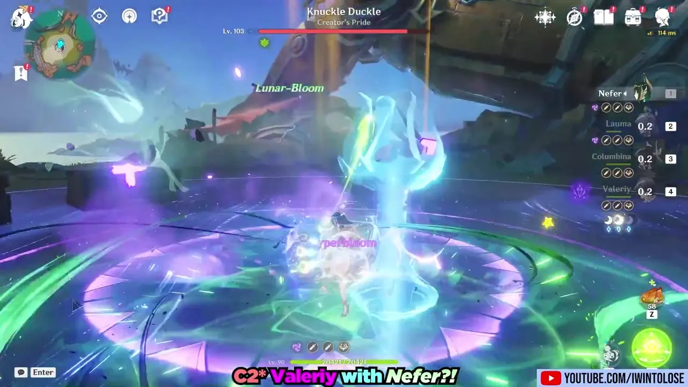
Con Valeriy C6 il team Mitya / Odette / Yae / Valeriy scende da 90 s a 71 s, superando perfino il team Sandrone. Il boss favorisce Mitya più di Sandrone, ma il salto resta enorme.
Loop (DPS Mitya + Valeriy C6)Yae EEE → Valeriy EC → Mitya C5, tap E → Odette EE → Valeriy Q → Mitya E (swap), C5, Q, C5
| Team | Tempo | Costo |
|---|---|---|
| C0 Mitya · C0 Odette · C1 Yae · C6 ValeriySacrificial · Exaiphanes · Widsith · Finale | 71 s | 3 |
| C0 Sandrone · C0 Odette · C1 Yae · C0 MityaAtonement · Exaiphanes · Widsith · Sacrificial | 73 s | 4 |
| C6 Cryo Traveler · C0 Odette · C1 Yae · C0 MityaExaiphanes · Emberwell · Widsith · Sacrificial | 79 s | 3 |
| C1 Cyno · C0 Odette · C1 Yae · C0 MityaR5 Deathmatch · Exaiphanes · Widsith · Sacrificial | 80 s | 4 |
| C1 Wriothesley · C0 Odette · C1 Yae · C0 MityaEchoes · Exaiphanes · Widsith · Sacrificial | 83 s | 4 |
| C0 Mitya · C0 Odette · C1 Yae · C0 ValeriySacrificial · Exaiphanes · Widsith · Finale | 90 s | 3 |
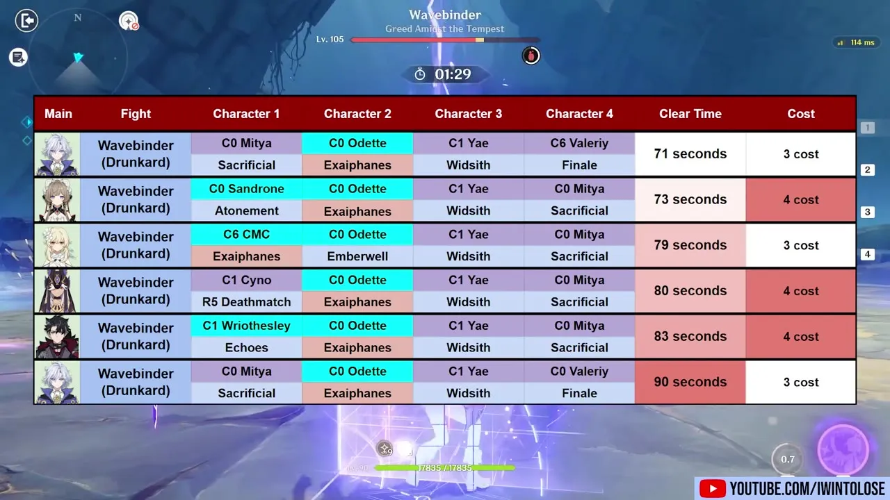
Fonte: IWinToLose Gaming — “Valeriy is kinda Busted? But at a cost... Genshin Impact 7.2”. Screenshot tratti dal video; numeri e tempi riferiti agli showcase del creator.